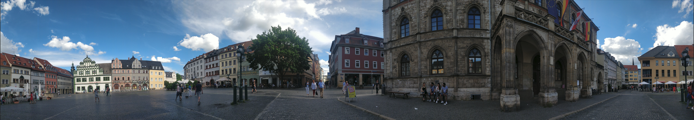

German Language Projects
The following is a summary of interesting coursework and projects completed as part of my German Language Studies humanities concentration while at MIT and during a semester abroad at the Philipps University in Marburg, Germany. The courses were all taught in German at the B2-C1 language level. The course descriptions are provided below as well as links to sample course deliverables.
21G.409 Advanced German: Visual Arts, Media, Creative Expression
Students develop their spoken and written language skills via storytelling, drama, interpretative speaking, poetry slam, writing short, creative texts; and by reading contemporary prose, plays, and poetry. Explores different art forms such as short film, photography, installation and digital art, and commercials. Discusses works by Yoko Tawada, Ernst Jandl, and Babak Saed, among others. Students create their own mini-film, commercial, or multimedia work.
Sample coursework
21G.410 Advanced German: Communication for Professionals
Exposes students to current issues and language use in German technology, business, and international industrial relations; discusses ramifications of these issues in a larger social and cultural context. Prepares students who wish to work or study in a German-speaking country. Focuses on specialized vocabulary and systematic training in speaking and writing skills to improve fluency and style. Emphasizes communicative strategies that are crucial in a working environment. Includes discussion and analysis of newspaper and magazine articles, modern expository prose, and extensive use of online material.
Sample coursework
21G.420 Visual Histories: German Cinema 1945 to Present
Studies the history, aesthetics, and cultural contexts of German film since the end of World War II. Explores films of the "New German Cinema" by filmmakers Fassbinder, Wenders, Herzog, and others. Investigates and compares different film traditions of East and West Germany, new aesthetic styles of the "Berlin School" after the fall of the Berlin wall, and new filmic concepts in contemporary productions, including films from filmmakers with migration backgrounds. Special focuses on the analysis of the language of film, different genres, and aesthetic traditions in their historical and societal contexts.
Sample coursework
German C1 Intensive Course and corresponding Conversation Class
Intensive Course
Seven week long intensive language course at the C1 level(after placement test) held at the Philipps University to prepare exchange students for classes as well as life in Germany for that semester and beyond. The main goal was to encourage extensive self expression in a variety of contexts that formed the themes for the sessions, such as stories and fairy tales, globalization, dialects, current affairs and sensitive topics such as gun violence and restriction laws, and so on. To this end, the students assembled every weekday for three hours, participating in class discussions, and working through grammatical exercises. The coursework also entailed a writing component, with several 1-3 page writing assignments ranging from writing original short stories or spins on fairy tales, to expositions on assigned readings.
Conversation Class
Picking up from the Intensive course, this course provided further opportunities to practice spoken German. Two hours a week were dedicated to in class discussions on a variety of themes, and three hours a week were dedicated to an outdoor excursion to different locations in Marburg, where the students talked about day to day themes and experiences encountered while out on the town. Besides discussions, some class assignments included researching topics relevant to Marburg and preparing presentations for the class.
Sample coursework
LV-09-067-NDL-170: German Short Stories
The course sought to determine what constitutes a short story outside of the quantitative description of its brevity. In the course, media formats and contexts where short stories are and were prominent are studied, such as newspapers and magazines, and in the first decades of the 20th century & period after the second world war respectively. Contextualized in their original places of publication and embedded in concrete historical context(as opposed to the usual compiled anthologies), the stories become less enigmatic. The course explores texts by Robert Walser, Marieluise Fleißer, Robert Musil, Wolfgang Borchert, Ilse Aichinger, Elisabeth Langgässer, Thomas Bernhard, Sibylle Berg und Judith Hermann
The course was conducted as a seminar, with the students preparing written summaries of concepts explored in seminar discussions, as well as expository essays on relevant themes across different works
Sample coursework
LV-09-067-NDL-166: Popliterature
The course provided a systematic, historical overview of the interaction between literature in mainly, but not limited to:
- German-language literature from 1945 to the present.
- Anglo-American Beat literature and its reception in Germany since the 1950s
- German pop literature before and after 1968 as a subversive protest against bourgeois “high culture”
- Pop writers since the mid-1990s with authors like Christian Kracht, Benjamin von Stuckrad-Barre, Rainald Goetz, Alexa Hennig von Lange, Andreas Neumeister among others
- Social beat, literary rap or poetry slam, which seek to build on the avant-garde and dissident tendencies of the post-war period
The course culminated in a final paper expounding a theme of choice in the context of the works explored
Sample coursework
LV-09-865-NDL-046: Literature and Tolerance: From Lessing and Mozart to Max Frisch
Tolerance is a key concept in social discourse, counting among the guiding principles and basic values of a democratic society − despite often being controversial and endangered. The seminar will deal with the question of how the idea of tolerance is discussed, postulated and reflected in literary texts. From exploring the prehistory and genesis of the idea of tolerance since the early modern period (S. Castellio, Voltaire, Locke), the explosiveness and scope of the concept becomes readily apparent. Works explored include: G.E. Lessing: “Nathan the Wise” (1779); W.A. Mozart: “The Abduction from the Seraglio” (1782, libretto); M. Frisch: “Andorra” (1961)
The course featured several small exercises and expository works on different themes or concepts emergent tion the works explored, in addition a major group term paper and group presentation on the themes of tolerance as expressed in one of the assigned readings, and an individual final paper on a different theme as expressed in a variety of class readings.
Sample coursework